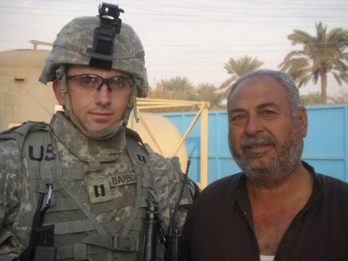
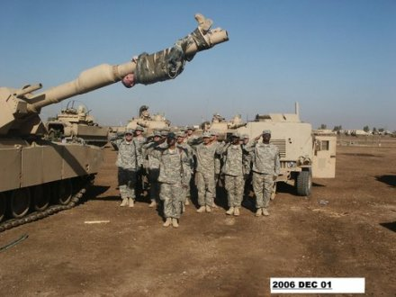
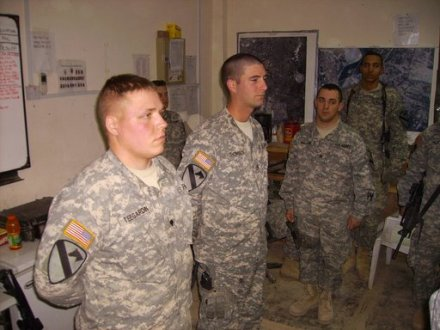
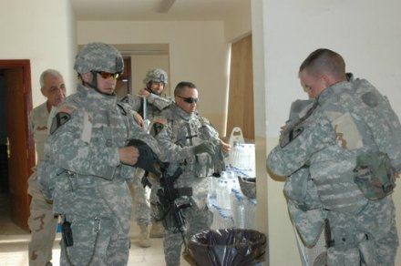
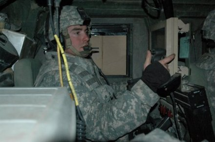
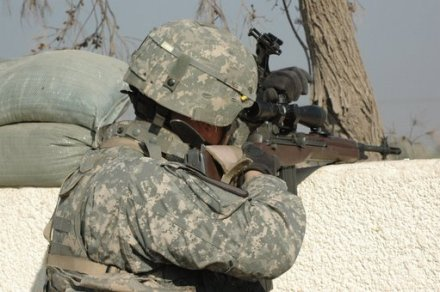
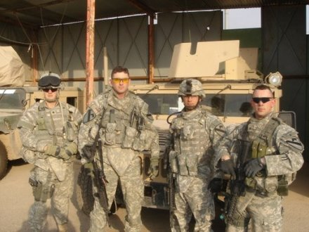

|
Photos From Our D 2/8 Soldiers In Iraq
Photos Page 1
Photos Page 2
Photos Page
4
Photos
Page 5
Photos
Page 6
Photos
Page 7 |
 CPT Jerome Barbour and an Iraqi citizen |
 What happens to young LT's when they get promoted (newly promoted 1LT Minges is saluted by his Platoon after being taped to his tank's gun tube ) |
 Promotion Ceremony |
 |
 Sgt. Anthony Marino, a CROWS operator with Co. D, 2-8th CAV, uses the Common Remotely Operated Weapons System thermal sights during a route recon along a road in Tarmiyah, Iraq. |
 SSG Rhodes. Each platoon has one guy labeled a "designated marksman." They were given M14s (yep they're still around) with a scope. |
 SPC Ollek, CPT Barbour, SGT Hickscolon, SGT Malone |
|
Photos Page 1
Photos Page 2
Photos Page
4
Photos
Page 5
Photos
Page 6
Photos
Page 7 BACK |